Sign-in screens
2026-11-20. Sign in / Sign up, Reset password and New password on wide screens. References: Microsoft Copilot, Dribbble and Midday sign-in (desktop), Pandora (tablet). Dark; every state at 390, 820 and 1440 (22 states, 66 shots; 0 with a layout failure in the self-check).
- Phone: unchanged.
- Tablet: the phone's page, the form centred at
--form-w, a phone's width; no longer a form sheet. - Desktop: a split page: the form half on the left, every state in its place, centred both ways; the photo half on the right, a tall crop of hyrox-sled-hall-1 in the Podium treatment, the Onrace wordmark over it. Built once in
gate-layout.css.
new-password-error?cause=submit live ↗
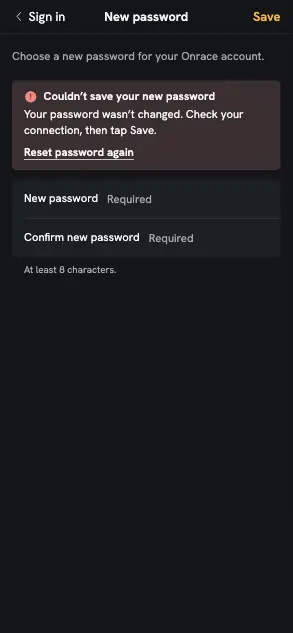
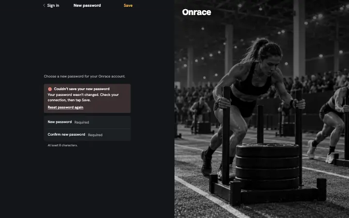
new-password-error?cause=short live ↗
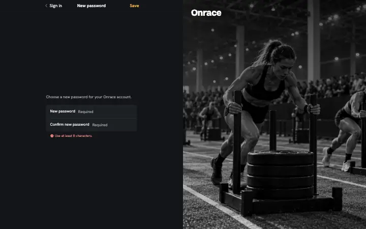
new-password-error?cause=same live ↗
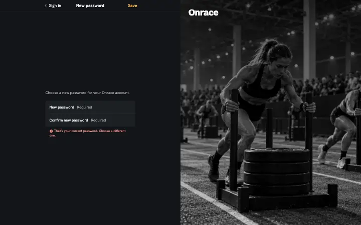
new-password-error?cause=mismatch live ↗
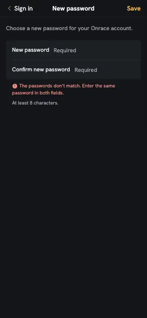
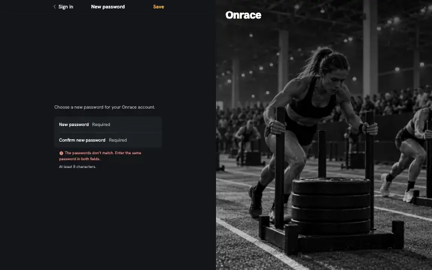
new-password-error?cause=expired live ↗
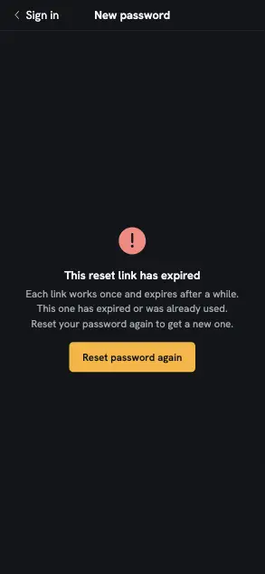
new-password-loading live ↗
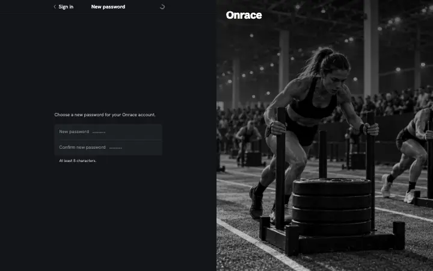
new-password live ↗
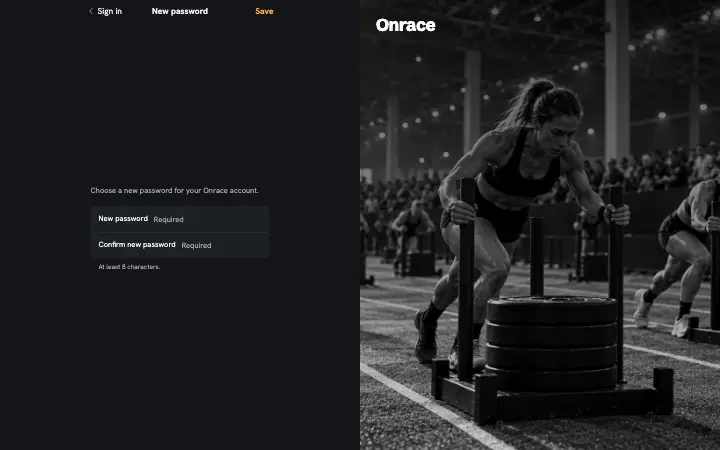
reset-password-check-inbox live ↗
reset-password-error live ↗
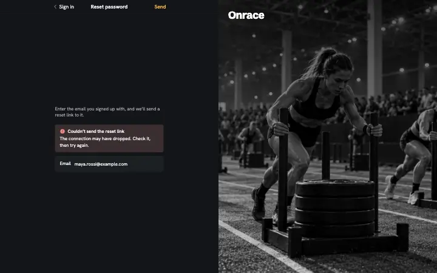
reset-password-error?cause=rate live ↗
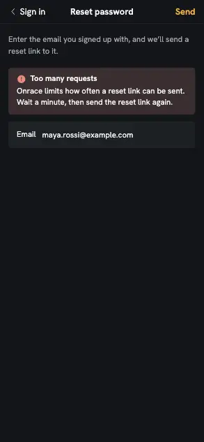
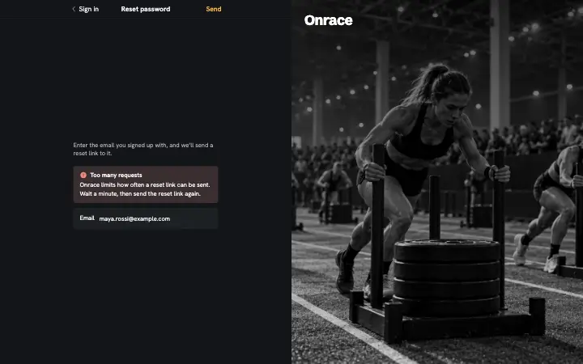
reset-password-loading live ↗
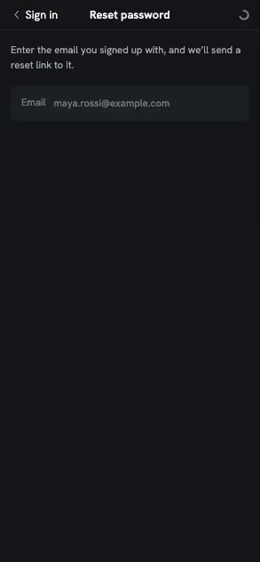
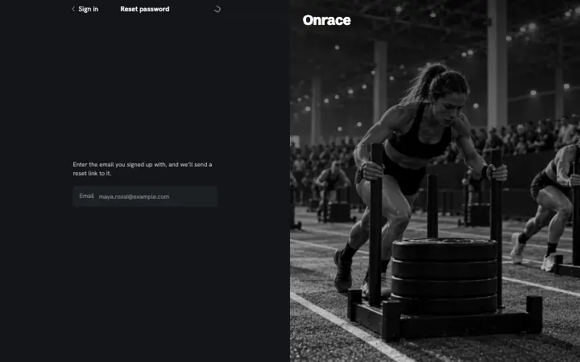
reset-password live ↗
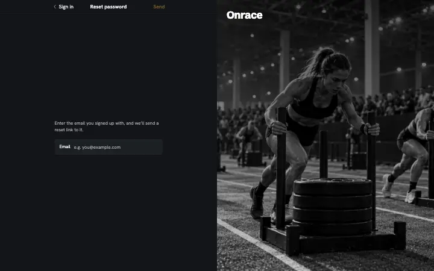
sign-in-sign-up-check-inbox live ↗
sign-in-sign-up-check-inbox?reason=unconfirmed live ↗
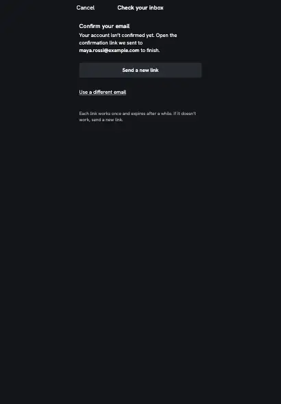
sign-in-sign-up-error?cause=signin live ↗
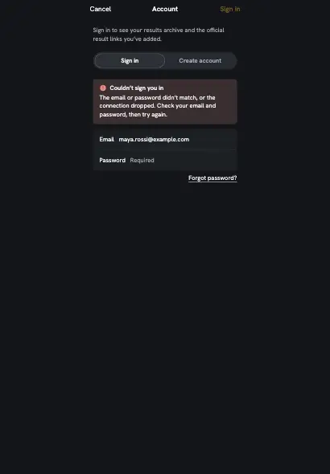
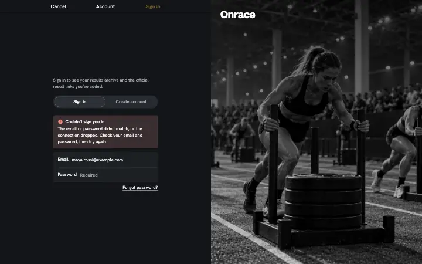
sign-in-sign-up-error?cause=signup&mode=signup live ↗
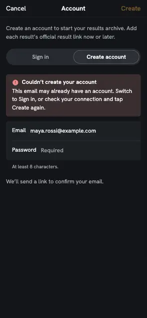
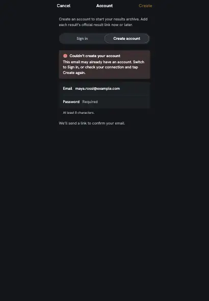
sign-in-sign-up-error?cause=confirm live ↗
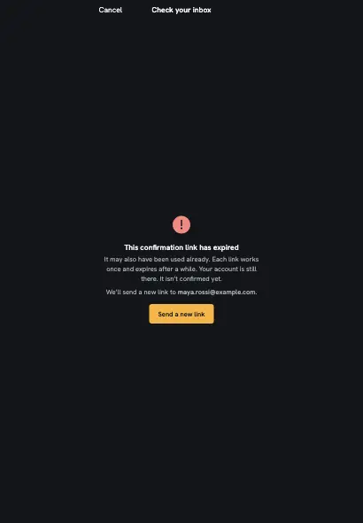
sign-in-sign-up-loading live ↗
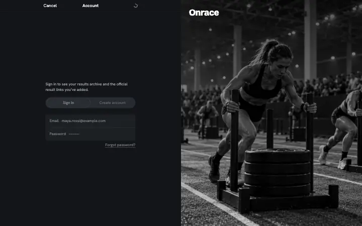
sign-in-sign-up-loading?mode=signup live ↗

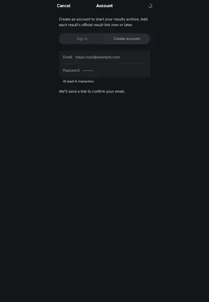
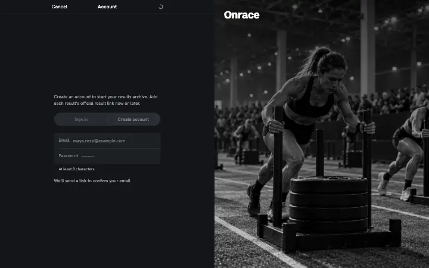
sign-in-sign-up live ↗
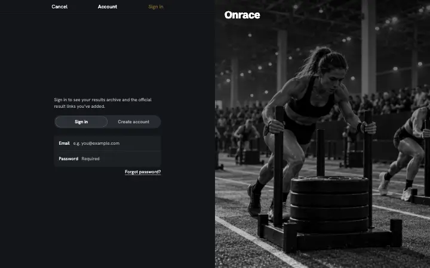
sign-in-sign-up?mode=signup live ↗
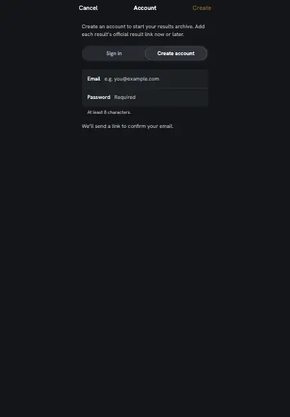
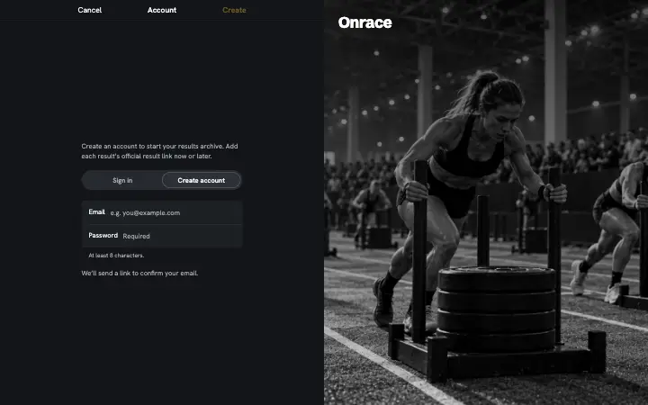
sign-in-sign-up?reset=done live ↗
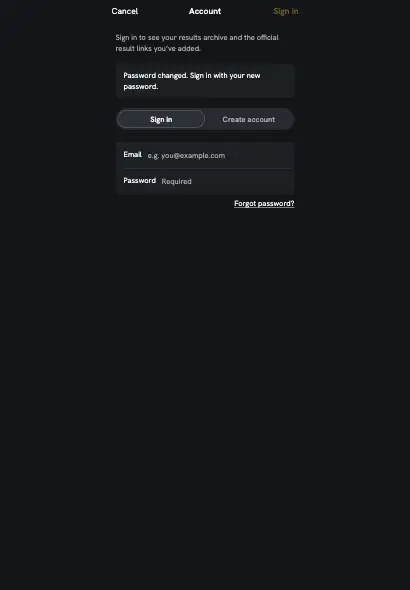
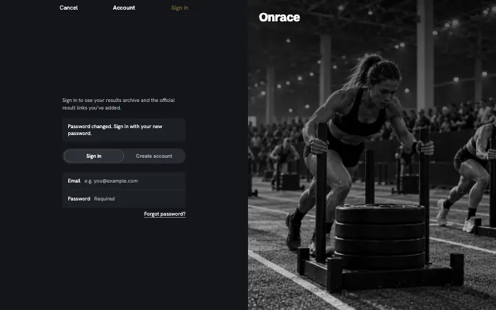